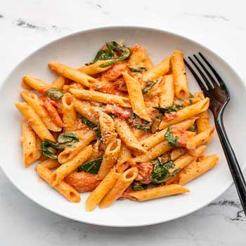
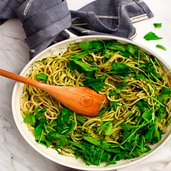
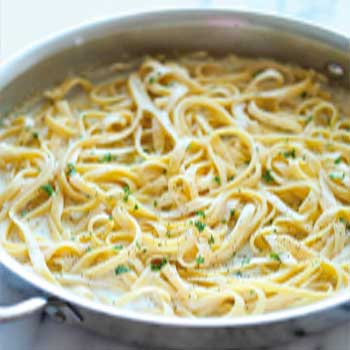

More Recipes Like This

Creamy Tomato and Spinach Pasta

Basil Pesto Pasta

Right after graduating from my first degree, I decided to do what all college kids do and travel Europe. And like all 22-year-olds, I didn’t have much money to my name, so I decided to take a small job overseas to pay for my trip of a lifetime. I was able to find one with a summer camp in Italy that boarded tutors and paid for their travel to the different regions of Italy. I was one of the lucky ones set to stay near Florence and I was the luckiest one as I was boarding with the very loving and hospitable Donati Family. One night, the nonna I was staying with, Paola, decided to teach me how to make fresh pasta. Strictly in Italian, I stumbled my way through the lesson and was able to make pappardelle successfully. Now back in Canada ten years later, I still remember that lesson like it was yesterday and hope that you too will make it through this recipe successfully – don’t worry if a couple of stumbling blocks get in your way.
20 min + 1 hour
4 servings
pasta, fresh, homemade